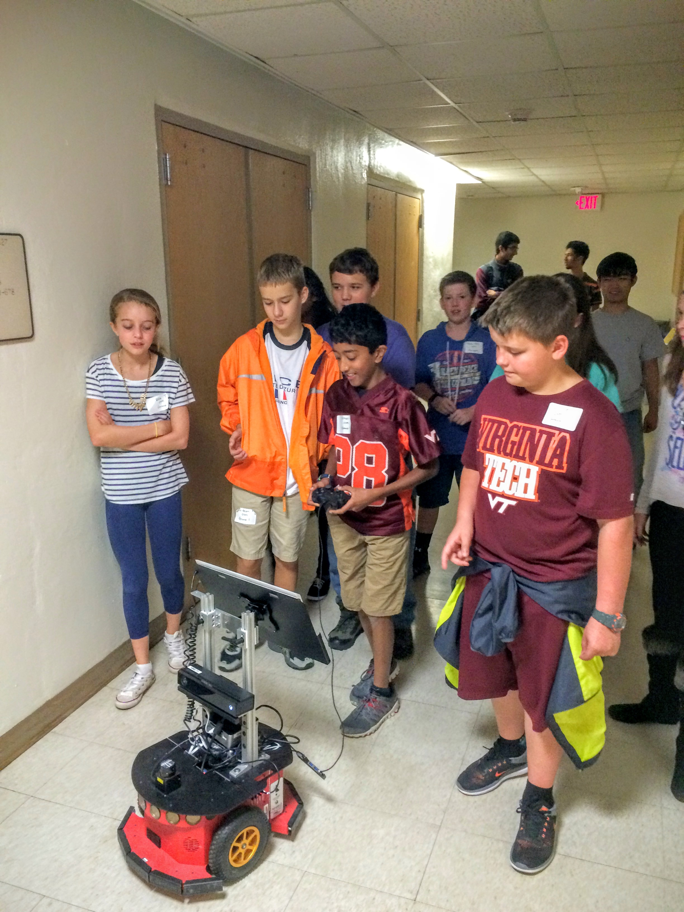
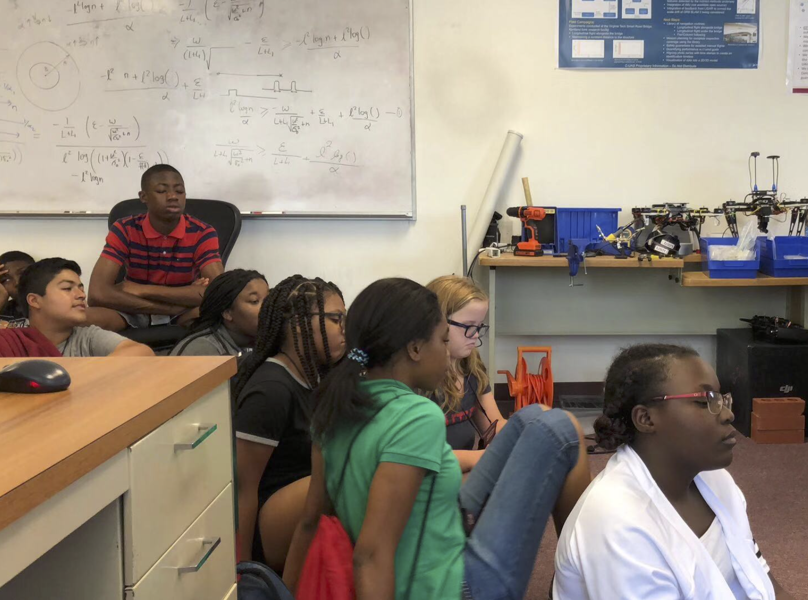
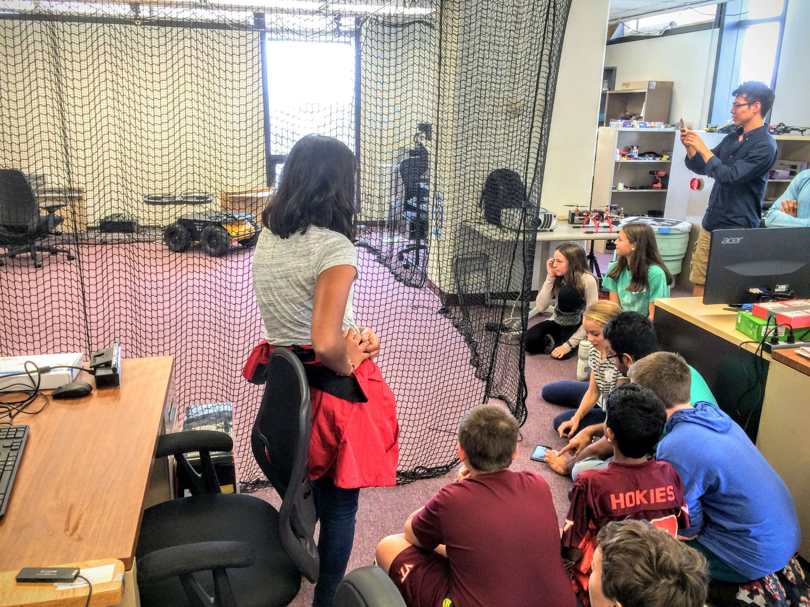

Service
K-12 STEM Outreach
  
Middle and high school students visiting our lab and flying DJI drone during VT Center for Enhancement of Engineering Diversity, "Imagination Camp".
Mentor
Robotics: Science and Systems (RSS) Mentoring Program: Inclusion@RSS, 2020Academic Mentoring Experiences: mentored multiple gradate and undergraduate students at Virginia Tech, University of Maryland, and University of Pennsylvania, since 2018
Program Committee
AAAI-22 Student Abstract and Poster Program, 36th AAAI Conference on Artificial Intelligence, 2021 - 2022Intelligent Robotics and Multi-Agent Systems Technical Track, 37th ACM Symposium on Applied Computing (SAC 2022), 2021 - 2022
Workshop Co-organizer
Web Chair, Robotics: Science and Systems (RSS) Pioneers, 2021Reviewer
Reviewed 30+ papers for journals and conferences in areas of Robotics, Algorithms, Controls, and Machine Learning, since 2016Journals: IEEE Transactions on Robotics (T-RO), IEEE Transactions on Automation Science and Engineering (T-ASE), IEEE Robotics and Automation Letters (RA-L), Journal of Field Robotics(JFR), Robotics and Autonomous Systems (RAS), Swarm Intelligence, IEEE Transactions on Cybernetics, and Journal of The Franklin Institute
Conferences: Robotics: Science and Systems (RSS), IEEE International Conference on Robotics and Automation (ICRA), IEEE/RSJ International Conference on Intelligent Robots and Systems (IROS), Workshop on the Algorithmic Foundations of Robotics (WAFR), American Control Conference (ACC), and International Conference on Unmanned Aircraft Systems (ICUAS)